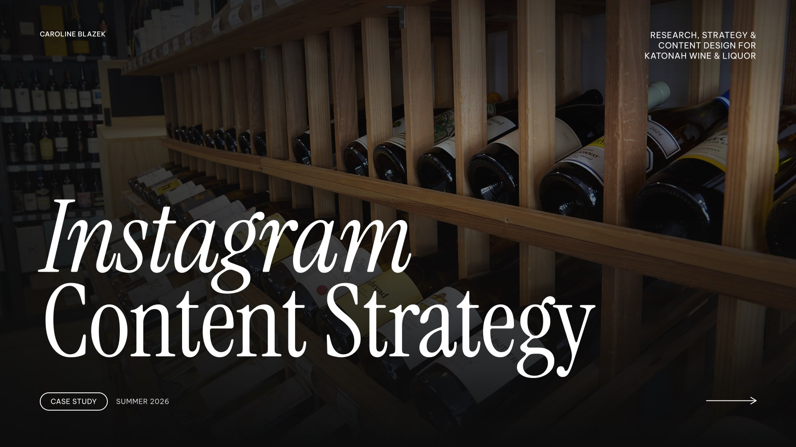

Katonah Wine & Liquor
- Digital Marketing
- Content Strategy
- Social Media Design
Katonah Wine & Liquor is an independent wine and spirits shop in Westchester, New York, with a strong emphasis on local community and discovery. I developed a social media and marketing system to give the store a more cohesive visual identity while creating content that connected its products, events, and people to the experience of refined local shopping.


Objective
Katonah Wine & Liquor came to me looking to strengthen its presence on Instagram and attract more customers to its tastings and events. At the time, the account primarily consisted of straightforward bottle photography, with little visual consistency or designed content beyond the store's existing logo and colors. The store wanted to become more visible within the local community while maintaining a refined but approachable character.
With significant creative freedom, I was responsible for developing the visual direction and content strategy for the account, including posts, Stories, Reels, and product photography. I also extended the system into monthly email marketing, creating reusable templates that could continue to be maintained by the store.


Approach
I began by researching how independent liquor stores use social media to build relationships with their communities. A consistent theme was an emphasis on education, personality, and experience rather than product promotion alone. I translated these findings into a content strategy centered on education and discovery, community and personality, products and new arrivals, and events and engagement.
Because the store did not have a complete visual identity for digital design, I developed a flexible system of typography, grid, color, and layout to bring consistency across its content. I applied this system across social content while producing much of the photography and video myself, often staging products in natural settings to connect them to the character of the Hudson Valley.


Results
The resulting system gave Katonah Wine & Liquor a more cohesive and recognizable presence across Instagram and email. Rather than treating each post as an isolated piece, the visual language allowed product features, educational content, event promotions, and community-focused posts to feel connected while still varying in format and tone.
The system was also designed around the realities of a small business. Social content could be more expressive and varied, while the email templates used simpler, repeatable structures that allowed the store to continue producing campaigns independently. Through ongoing content production and performance tracking, the account saw growth in reach and engagement while creating a stronger connection between the store's online presence and its in-person community.
